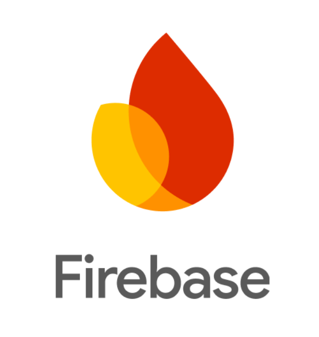
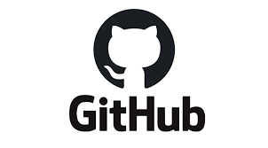
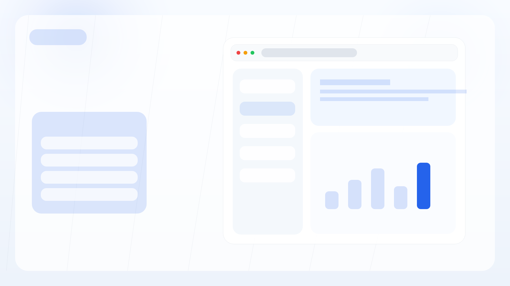
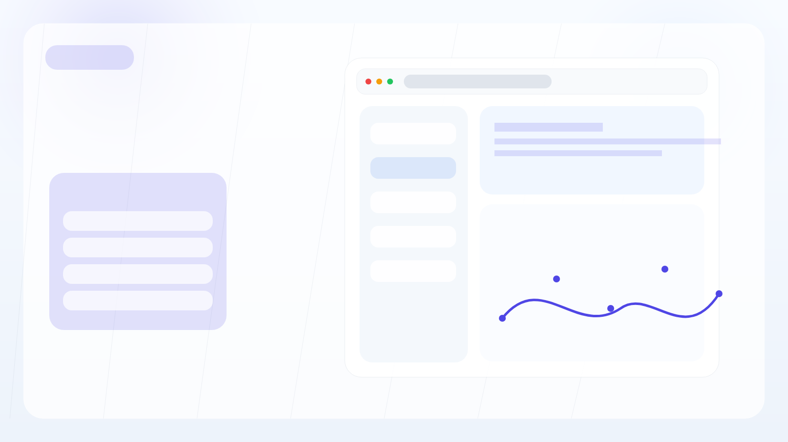
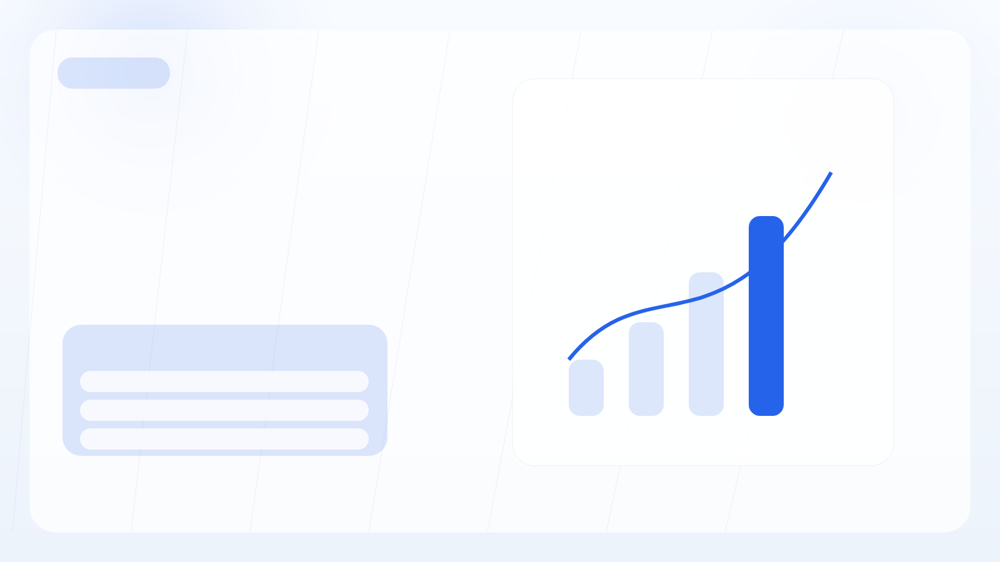
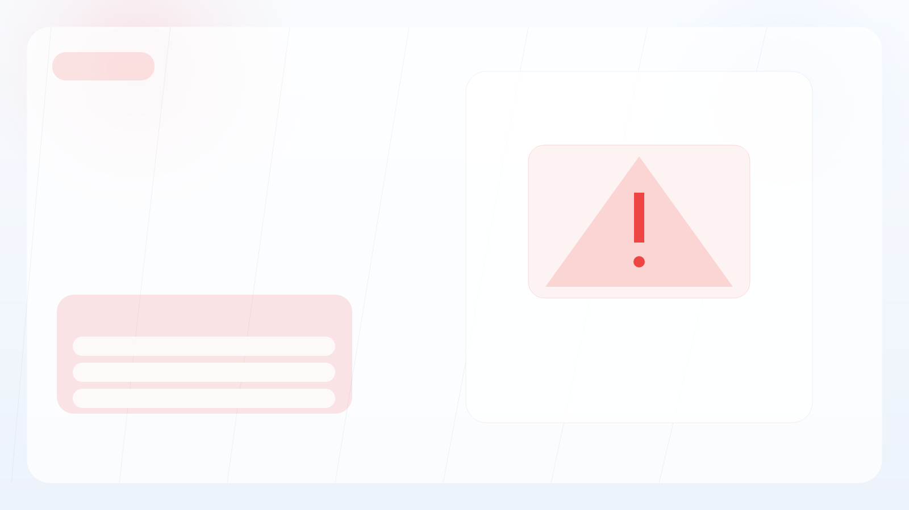
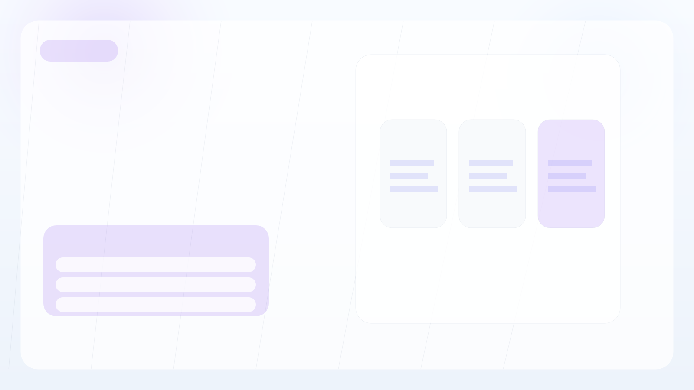

바이브코딩
Part Ⅱ
직접 만들며 확인한 속도와 가능성
실제로 구현해보니 가능성은
훨씬 더 선명하게 보였습니다.
서비스 환경설정
배포·운영·분석·SEO·광고까지 포함해 실제 서비스 수준으로 구성했습니다.

Firebase
웹 기반 통합 개발환경으로 인증·DB·스토리지를 한 곳에서 관리
Cloudflare
글로벌 엣지 배포 · 커스텀 도메인 연결

GitHub
모든 소스 커밋 관리 · 버전 이력 추적 · 배포 연동

Sevice AI : Gemini · Claude · OpenAI CLI
CLI 환경에서 AI에게 직접 작업을 지시하는 방식

Google Analytics · MS Clarity
실사용 데이터 수집 · 히트맵 · 사용자 흐름 분석

Google SEO · GEO · AdSense
검색 최적화 · 위치 정보 반영 · SNS 공유 · 광고 수익화 고려
CLI 환경에서 AI에게 작업을 지시할 때는 무엇을 어떻게 원하는지 명확히 말해야 품질이 올라갔습니다.

발표 화면 기준으로 꽉 차게 보이도록 맞췄고, 별도 텍스트 요소는 제거했습니다.
말하면 기록되고, 분석까지 이어집니다.
어제 무엇을 했는지 알아야 다음 운동도 설계할 수 있습니다.
운동 앱은 많지만, 운동이 끝난 뒤 다시 입력하는 과정은 여전히 귀찮습니다.
녹음 버튼 하나로 기록하는 구조를 생각했습니다.
저장, 통계, 분석, 추천 운동, 주의사항, 피드백까지 연결했습니다.

project-workout-main.png

project-workout-detail.png
그래서 음성 녹음 버튼으로 빠르게 기록하고, AI가 분석해서 오늘의 추천 운동과 주의사항을 알려주는 구조를 생각했습니다.
정보가 아니라
판단을 빠르게.
주식 사이트는 많지만, 정보가 많아도 바로 판단하기는 어렵습니다.
정보 나열보다 판단 보조에 집중했습니다.
네이버금융 · API 연동 기반 실시간 순위 제공
실시간 AI 투자 신호 · 클릭 시 종목 상세 분석
빨리 이해되게 하는 쪽에 집중했습니다.

project-stock-main.png

project-stock-detail.png
그래서 정보 나열보다 AI가 판단을 보조해주는 쪽에 집중했습니다. BUY/HOLD/SELL 결론 엔진 형태입니다.
실제로 움직여보니
가능성이 훨씬
구체적으로 보였습니다.
개발을 대체한다기보다,
추진력을 증폭시키는 방식에 더 가까웠습니다.
예전 같으면 시작 자체를 미뤘을 아이디어가 실제로 만들어졌습니다.
시작 장벽이 확실히 낮아졌고, 넓은 범위를 혼자 커버할 수 있었습니다.
AI 결과를 그대로 믿으면 안 됐습니다. 무엇이 왜 문제인지 정확히 말해야 품질이 올라갔습니다.
설명 능력이 곧 생산성으로 연결됐습니다. 더 정확히 말할수록 더 좋은 결과가 나왔습니다.
단, AI가 전부 해주는 것이 아니라 방향을 잡고 검증하는 것은 항상 사람의 몫이었습니다.
장점
직접 써보며 확인한 확실한 강점들입니다.
아이디어만 있으면 바로 시작할 수 있습니다. 준비가 줄고 실행이 빨라집니다.
머릿속 기획이 몇 시간 안에 화면으로 구체화됩니다.
프로토타입 → 검토 → 수정 사이클이 극도로 짧아집니다.
프론트·백엔드·배포·SEO까지, 한 사람이 커버하는 범위가 넓어집니다.
원하는 것을 명확히 설명할수록 결과가 좋아집니다. 기획력이 곧 개발력입니다.

주의점
빠르게 만드는 것과, 제대로 운영하는 것은 다른 문제였습니다.
된 것처럼 보이는 상태에 속기 쉽습니다. 직접 눈으로 확인해야 합니다.
AI가 보안을 자동으로 고려해주지 않습니다. 운영 레벨의 기준을 따로 세워야 합니다.
구조가 복잡해질수록 한 곳을 고치면 다른 기능이 예상치 않게 깨질 수 있습니다.
이해 없이 쓰면 운영 단계에서 위험합니다. 방향 판단은 사람이 해야 합니다.
AI가 만든 결과물도 실제 운영 전 반드시 직접 테스트해야 합니다.

3가지 AI,
직접 써보니
이랬습니다.
정답은 없고 상황마다 달랐습니다.
제 체감 기준입니다.

세 가지 모두 각자의 역할이 있었습니다. 상황에 맞게 병행해서 쓰는 게 가장 효율적이었습니다. 도구를 잘 고르는 것도 능력입니다.
어느 하나가 절대적으로 좋다기보다, 작업 성격에 따라 병행해서 쓰는 게 가장 효율적이었습니다.
실행이
이해보다
빨랐습니다.
이번 작업을 통해, 설명보다 실행이 훨씬 빠르게 이해를 만든다는 점을 확인했습니다.
직접 해보니 장점도 분명했고, 주의점도 분명했습니다.
완벽히 알고 시작하는 것보다, 한 번 직접 해보는 것이 더 빠릅니다.
AI를 많이 아는 것보다, 실제 일에 붙여보는 경험이 더 중요합니다.
좋은 아이디어가 있다면 함께 공유하고 같이 만들어갔으면 합니다.
실제로 써보며 내 일에 연결해보는 것이라고 생각합니다.
그리고 좋은 아이디어가 있다면 업무적으로도 함께 공유하며, 가까운 미래를 준비하는 개발팀이 되었으면 합니다. 🙌
완벽하게 준비하고 시작하는 것보다, 작게라도 직접 만들어보는 경험이 훨씬 빠르게 이해를 만듭니다.
좋은 아이디어가 있으시면 언제든지 같이 공유해요.